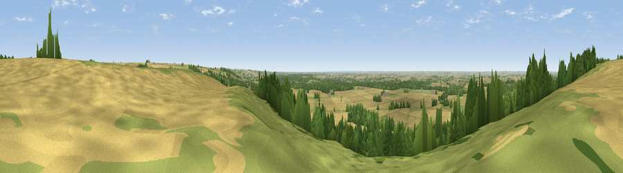

Viewpoint near Claxby
#11100 in England · top 3% of its area beats it · near ClaxbyThe view, rendered

A 360° render of this exact spot computed from the terrain model, tree cover and land cover — summer colours, afternoon light, calibrated against photographs of famous viewpoints. Real trees, hedges and buildings will differ in detail.
The panorama
Grey silhouette: terrain skyline in each direction (720 bearings, Earth curvature and refraction included). Dashed green: skyline with trees (+15 m) and buildings (+8 m) as obstacles. Blue strip: how far the ground is visible on each bearing.
Where the view opens
Wedge length = distance to the farthest visible ground on that bearing (vegetation-aware). Rings at 10, 25 and 50 km.
What fills the view
59% cropland · 28% grassland · 11% woodland · 1% built-up
Angular shares of the visible panorama (visual magnitude), not map area. Landscape diversity 0.43 (0–1 Shannon).
Key numbers
More beautiful places nearby
The staircase of upgrades: each row has a higher view potential than everything closer. Driving times are estimates from straight-line distance, calibrated against real road routing — check an actual route before setting out.
| Place | Direction | Drive | Score |
|---|---|---|---|
| Viewpoint near Claxby | N · 0 km | ~1 min | 64.9 |
| Viewpoint near Claxby | NNW · 2 km | ~5 min | 71.5 |
| Garrowby Hill (A166 crest) | NNW · 70 km | ~94 min | 71.9 |
| Viewpoint near Acklam | NNW · 74 km | ~98 min | 73.8 |
| Viewpoint near Wharncliffe Side | W · 81 km | ~105 min | 75.2 |
| Beacon Hill | N · 81 km | ~105 min | 79.1 |
| Viewpoint near Speeton | N · 81 km | ~105 min | 80.0 |
| Olivers Mount | N · 93 km | ~118 min | 80.3 |
53.42928, -0.31240 · source: screening · position refined by local search. Computed location — check access rights before visiting.